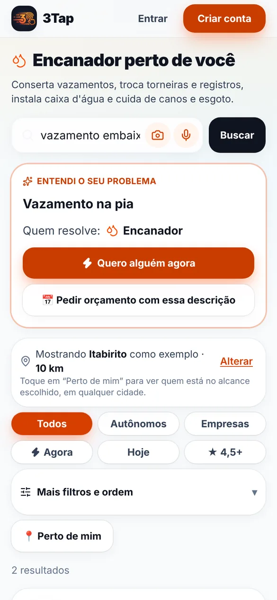
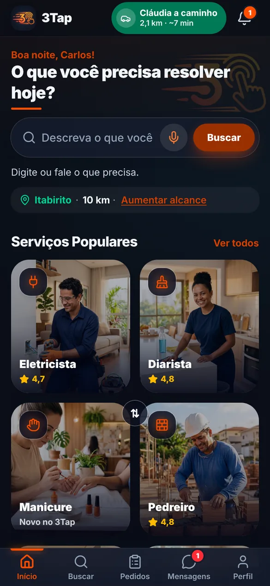
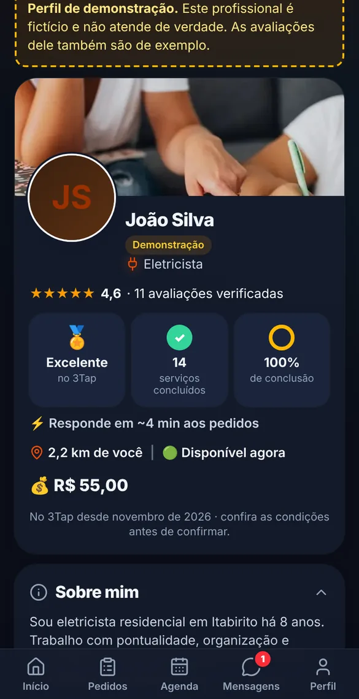
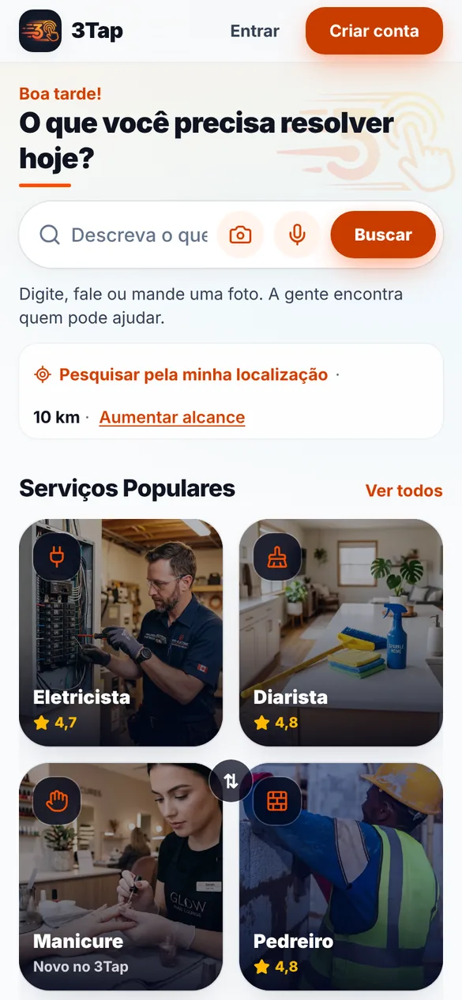
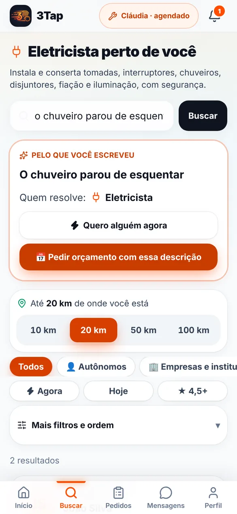
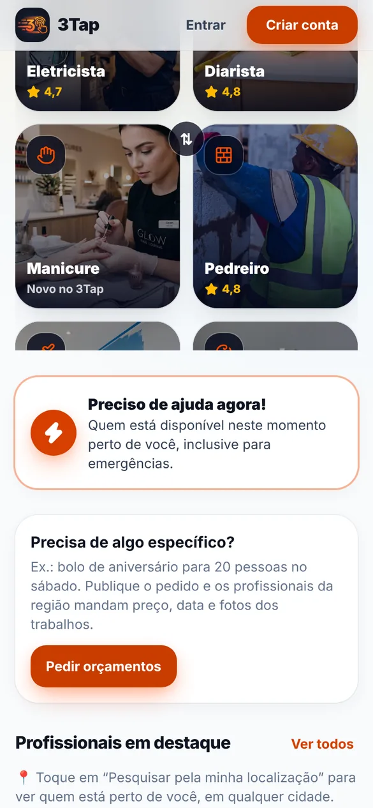
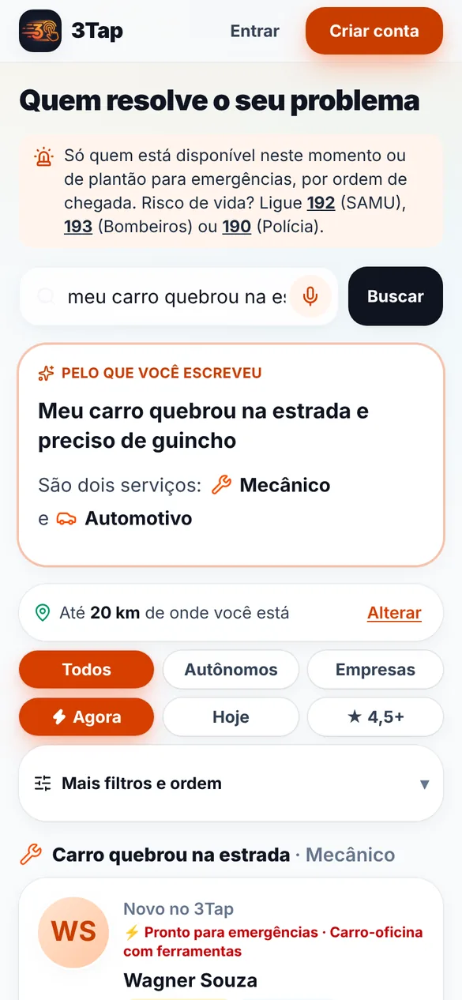
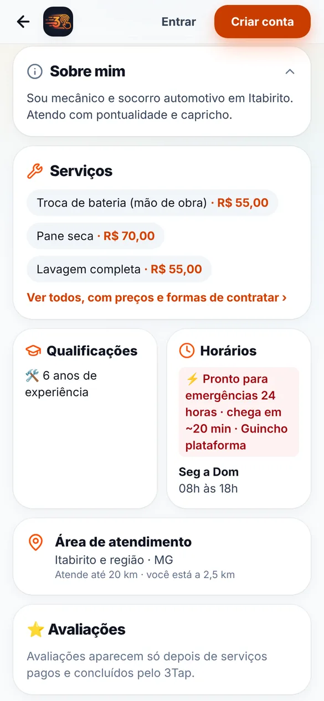
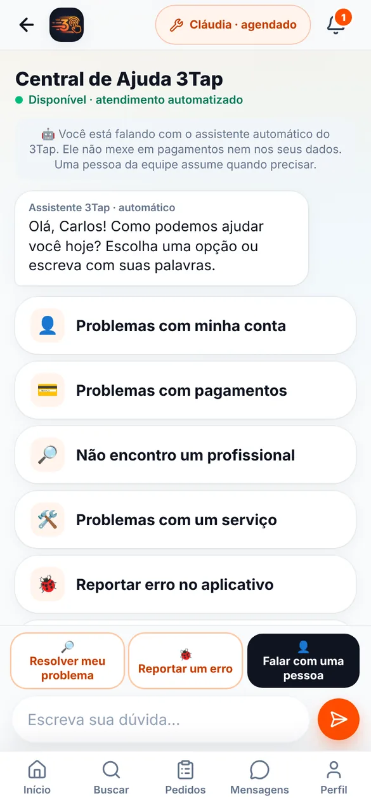
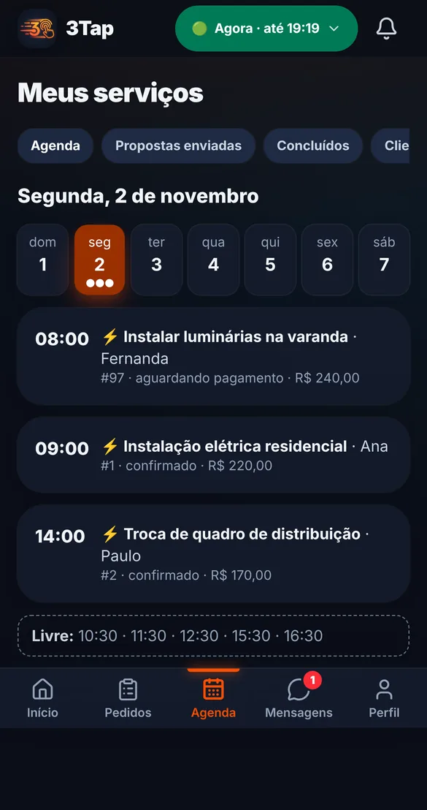

⚡
Contratar agora
Para serviços com preço conhecido: você escolhe o serviço, confirma preço e horário e paga. Sem vídeo, sem espera.
Guincho · frete · diarista · manicureVocê não precisa saber quem procurar. Digite, fale ou mande uma foto do problema: o 3Tap mostra profissionais e empresas disponíveis perto de você, com preço e avaliações de verdade.
Converse, combine, pague e acompanhe pelo app. Mais de 40 tipos de serviço, de eletricista a cuidador de idosos. Reputação construída só com serviços contratados de verdade. Funciona no navegador do celular e do computador.



Não sabe se é caso de encanador, eletricista ou outro especialista? Conte o que está acontecendo do seu jeito. O 3Tap entende, descobre quem resolve, confere quem atende a sua região e tem horário, e mostra as melhores opções. Sem formulário, sem interrogatório.
A indicação é uma sugestão para começar: você pode trocar a profissão quando quiser. O 3Tap não faz diagnóstico técnico pela foto nem inventa preço ou horário: quem avalia e confirma é o profissional.


Pintar a casa na semana que vem é uma coisa. Precisar de um guincho às 23h, sozinho, na estrada, é outra. Por isso o 3Tap tem um caminho só para urgências: ele mostra apenas quem está disponível neste momento, por ordem de chegada.
Risco de vida, incêndio ou violência? Ligue antes de tudo: 192 SAMU · 193 Bombeiros · 190 Polícia. O 3Tap não substitui esses serviços.


Cada serviço mostra a forma que faz sentido para ele. Você não precisa entender regra nenhuma: o app mostra o próximo passo.
Para serviços com preço conhecido: você escolhe o serviço, confirma preço e horário e paga. Sem vídeo, sem espera.
Guincho · frete · diarista · manicureO profissional pede uma vistoria. Você grava um vídeo curto do problema na própria conversa, quando puder. Ele assiste e manda o preço fechado. Você aceita, paga, e o preço não muda.
✓ Preço fechado por vídeo Eletricista · encanador · pedreiro · ar-condicionadoPara trabalhos maiores: você descreve, manda fotos e vídeos, o profissional pergunta ou agenda uma visita e envia a proposta detalhada. Pode pedir ajuste em vez de só recusar.
Obras · pintura · marcenaria · eventosQuando o serviço depende de avaliação, você não paga antes de saber o preço final. Adicionais são orçados e aprovados por você antes de serem feitos.
Cada contratação é um pedido com número próprio. No topo, o profissional e o status. Abaixo, três abas: Conversa (mensagens, fotos, vídeos, áudios e chamadas), Andamento (o que foi feito e o que falta) e Pagamento. Você nunca precisa sair do pedido para mandar um valor ou pagar.
Aceitou o preço? Pague por Pix dentro do pedido. O valor fica guardado e é liberado ao profissional quando você confirma a conclusão. Se algo der errado, Reportar problema segura a liberação até a equipe analisar.
Pagamentos processados por instituição autorizada pelo Banco Central. O 3Tap não vê nem guarda seus dados bancários.
O card do profissional mostra a situação dele naquele momento, controlada pelo sistema: distância, disponibilidade e preço. E a ordem não é só quem está mais perto: quem cumpre o que promete vem primeiro.
O profissional pode sair agora. Você chama e ele recebe o alerta na hora.
⚡ CHAMARAinda tem horário hoje. Você escolhe o melhor para você.
AGENDAR PARA HOJEVeja os dias e horários livres na agenda. Ao escolher, o horário fica reservado para você até a confirmação.
VER AGENDA
Cada card e cada perfil mostram o que importa para decidir, sem abrir dez telas.
Documentos e qualificações aparecem como enviados pelo próprio profissional. Nota baixa ou um cancelamento isolado nunca bloqueiam ninguém automaticamente: geram verificação, não punição.
Dentro do app, no seu perfil. Começa com o assistente automático, que resolve a maioria das dúvidas na hora: como mudar a foto, aumentar o alcance, por que não encontro profissionais, meu pagamento não apareceu. Se não resolver, uma pessoa da equipe assume.
O assistente avisa que é automatizado, não mexe em pagamentos nem nos seus dados, e nunca obriga você a passar por dez perguntas antes de falar com alguém.

O Instagram mostra o que você faz. O 3Tap leva até você quem precisa do que você faz. Sem precisar de seguidores, anúncio ou marketing: o cliente descreve o problema e o 3Tap chama você.
"Sua reputação é seu maior ativo."

Dinheiro compra mais oportunidades, não uma reputação melhor. Um autônomo bem avaliado no plano gratuito continua aparecendo; quem paga por destaque nunca passa na frente de quem é melhor avaliado.
Perfil completo, presença nas buscas, chamados, agenda e pagamento pelo app. Você só paga a taxa sobre o serviço feito.
Empresas e instituições: mensalidade a partir de R$ 39,90, sem comissão.Mais fotos no portfólio, informações comerciais e mais exposição nos resultados.
Tudo do Profissional, janela de oportunidade antecipada nos pedidos, links para redes sociais e página personalizada.
Toque num serviço para ver quem atende perto de você.
Começou em Itabirito (MG) e funciona a partir da sua localização, em qualquer cidade. Comece perto e aumente o alcance (10, 20, 50 ou 100 km) quando quiser mais opções.
Não achou sua resposta? Abra o app e fale com a Central de Ajuda pelo seu perfil.
Não. Criar conta é grátis, e o cliente paga só o valor combinado com o profissional, sem taxa a mais. A taxa da plataforma é descontada do valor que o profissional autônomo recebe, e ele vê essa taxa antes de enviar o preço. Empresas pagam uma mensalidade, sem comissão.
Você aceita o preço e paga pelo app, por Pix, dentro do próprio pedido. O dinheiro fica guardado até você confirmar que o serviço foi concluído. Então ele é liberado para o profissional. O pagamento é processado por instituição autorizada pelo Banco Central.
Toque em Reportar problema no pedido. A liberação do dinheiro fica bloqueada até a equipe do 3Tap analisar a conversa e o histórico. A equipe pode liberar o valor, devolver tudo ou devolver uma parte.
Sim, e as regras aparecem no pedido antes de você decidir. Na contratação imediata, o cancelamento é gratuito até o profissional ficar “a caminho”; na agendada, até 24 horas antes. Se é o profissional quem desiste antes de começar, você recebe tudo de volta.
Escreva, fale ou mande uma foto do problema. O 3Tap indica a profissão e já mostra quem atende a sua região, com horário livre na data que você pediu. Você pode trocar a profissão se preferir.
Um caminho só para urgências: guincho, chaveiro, eletricista, encanador, mecânico, refrigeração. O 3Tap mostra apenas quem está disponível naquele momento, por ordem de chegada, e manda o chamado direto para o profissional. Em emergência com risco à vida, ligue 192, 193 ou 190: o 3Tap não substitui esses serviços.
Quando o profissional pede, aparece o botão Gravar vídeo na conversa. Você grava um vídeo curto do problema, ele assiste e manda o preço fechado. Os dois não precisam estar livres ao mesmo tempo. A chamada de vídeo ao vivo continua como opção.
Veja a nota, as avaliações verificadas (só de quem contratou e pagou pelo app), o percentual de serviços concluídos, o tempo de resposta e o portfólio. Documentos e qualificações aparecem como enviados pelo próprio profissional: o 3Tap não os apresenta como verificados.
Não. Cliente e profissional conversam pelo chat e pelas chamadas de voz e vídeo do próprio 3Tap, e o número de ninguém aparece.
Sim. Oficinas, escolas, salões, cursos e outros estabelecimentos têm página comercial e aparecem nas buscas ao lado dos autônomos. Empresas pagam uma mensalidade e não pagam comissão sobre os serviços.
O 3Tap começou em Itabirito (MG) e funciona a partir da sua localização, em qualquer cidade. Onde ainda há poucos profissionais, o app amplia o alcance sozinho, procura cidades vizinhas e avisa quando surgir alguém compatível.
Crie sua conta, escolha Trabalhar e cadastre seus serviços, preços, região de atendimento e disponibilidade. Pronto: você já aparece para clientes perto de você. Se já tem conta como cliente, é só ativar o modo profissional no Perfil.
Quando alguém entra no 3Tap pela sua indicação, a comissão que o app ganharia sobre os serviços dessa pessoa no primeiro mês é repassada a você. Depois do primeiro mês, volta ao normal.
Profissionais e empresas certos, disponíveis perto de você. Conversa, preço, pagamento e acompanhamento num pedido só.
É profissional ou tem uma empresa e quer receber chamados?
Quero oferecer meus serviços3Tap · Clicou, chegou.